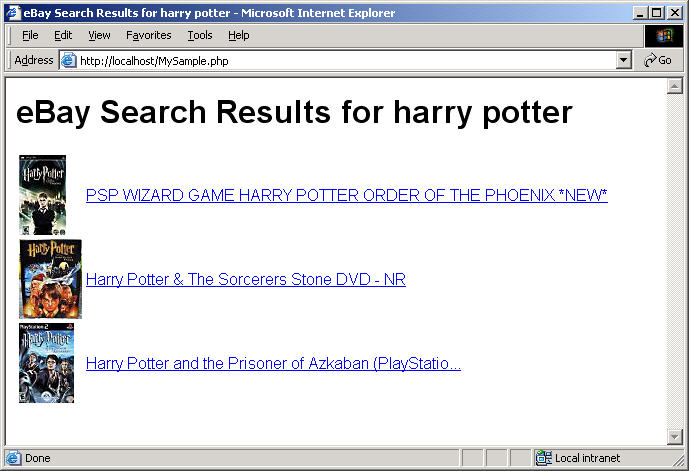

This tutorial shows how easy it is to use the eBay Finding API. The tutorial shows you how to build a simple PHP application that submits a findItemsByKeywords call to search for eBay listings based on a keyword query. The code constructs a URL-format HTTP GET call that returns an XML response. The PHP program parses the XML response and constructs a simple HTML page that shows the results of the search.
After completing the tutorial, you'll have an application that displays an HTML page that looks similar to the following when it runs:

For notes about the tutorial, additional resources, and suggestions for next steps, please see Notes and Next Steps.
This tutorial contains the following sections:
The completed code is provided as a downloadable ZIP file, GettingStarted_PHP_NV_XML.zip. To run the program, you must replace instances of "MyAppID" in the tutorial code with your production AppID.
There are a few prerequisites for completing this tutorial:
Joining is free and you get 5,000 API calls a day just for joining! When you generate your application keys from your My Account page, note your Production AppID so you can substitute it in this tutorial where it says "MyAppID." The program in this tutorial makes calls to the eBay production site and makes use of live production data.
Apache HTTP Server is a popular web server, capable of running PHP applications. Apache is easy to install and configure. The steps in this tutorial are written with the assumption you are using Apache. PHP is, however, compatible with most popular web servers, so Apache is not strictly required. The tutorial code should run on any web server configured to support PHP.
The code for this tutorial is written in PHP. PHP 5 includes the SimpleXML extension, which is required for this tutorial.
In this step, you set up the basic PHP code to construct the API request and the HTML code for displaying the results.
To create the initial code for your Finding API call:
MySample.php, with the following code:
<?php
?>
<!-- Build the HTML page with values from the call response -->
<html>
<head>
<title>eBay Search Results for <?php echo $query; ?></title>
<style type="text/css">body { font-family: arial,sans-serif;} </style>
</head>
<body>
<h1>eBay Search Results for <?php echo $query; ?></h1>
<table>
<tr>
<td>
<?php echo $results;?>
</td>
</tr>
</table>
</body>
</html>
Save the file as MySample.php in the DocumentRoot directory of your Apache installation (for example, C:\Program Files\Apache Software Foundation\Apache2.2\htdocs). The file includes the PHP container (<?php ... ?>) where you'll add the code to make an API request and parse the response. It also includes the HTML code to display the data parsed from the XML response.
| Standard Parameter | Sample value | Description |
|---|---|---|
| OPERATION-NAME | findItemsByKeywords | The name of the call you are using. This is hard-coded to findItemsByKeywords in the following step. |
| SERVICE-VERSION | 1.0.0 | The API version your application supports. |
| SECURITY-APPNAME | MyAppID | The AppID you obtain by joining the eBay Developers Program. |
| GLOBAL-ID | EBAY-US | The eBay site you want to search. For example, the eBay US site (EBAY-US) or the eBay Germany site (EBAY-DE). |
| Call-Specific Parameter | Sample value | Description |
|---|---|---|
| keywords | harry potter | The string of words you want to match with eBay item information, such as titles. The $safequery variable (added in the next step) will URL-encode your query keywords to replace spaces and special characters so the query will work in a URL request. |
| paginationInput.entriesPerPage | 3 | The maximum number of items to return in the response. This is hard-coded as 3 in the program code. |
This code contains the following:
$apicall, constructed with values from the declared variablesNote: You must replace the "MyAppID" value for the $appid variable with your Production AppID. Retrieve your AppID from your My Account page. |
Enter the following code inside the PHP tags (<?php ... ?> at the top of the file.
error_reporting(E_ALL); // Turn on all errors, warnings and notices for easier debugging // API request variables $endpoint = 'http://svcs.ebay.com/services/search/FindingService/v1'; // URL to call $version = '1.0.0'; // API version supported by your application $appid = 'MyAppID'; // Replace with your own AppID $globalid = 'EBAY-US'; // Global ID of the eBay site you want to search (e.g., EBAY-DE) $query = 'harry potter'; // You may want to supply your own query $safequery = urlencode($query); // Make the query URL-friendly // Construct the findItemsByKeywords HTTP GET call $apicall = "$endpoint?"; $apicall .= "OPERATION-NAME=findItemsByKeywords"; $apicall .= "&SERVICE-VERSION=$version"; $apicall .= "&SECURITY-APPNAME=$appid"; $apicall .= "&GLOBAL-ID=$globalid"; $apicall .= "&keywords=$safequery"; $apicall .= "&paginationInput.entriesPerPage=3";
MyAppID in the API request variables code with your Production AppID.
Important: This tutorial uses the production endpoint for the Finding API, so you must use your production AppID for the application to work. The request will fail if a Sandbox AppID is used.
$appid = 'MyAppID'; // Replace with your own AppID
The tutorial code is not yet ready to run. Proceed to the next step to add the code that submits the API request and parses the response.
In this step you will add code to store and then display the items returned.
Here is the URL used for your Finding API call, as described in Step 1:
The response data is returned in XML format by default.
In this step you will add code to parse the call response and display the items returned.
The following PHP code creates rows to add to the HTML table in the HTML body of the MySample.php file. The code loops through the array of items in the search results, adding a new row to the table for each item. Each row consists of the item's gallery image and title. The title links to the item's View Item page.
Add the following code just after the last line of the $apicall variable ($apicall .= "&paginationInput.entriesPerPage=3";).
// Load the call and capture the document returned by eBay API
$resp = simplexml_load_file($apicall);
// Check to see if the request was successful, else print an error
if ($resp->ack == "Success") {
$results = '';
// If the response was loaded, parse it and build links
foreach($resp->searchResult->item as $item) {
$pic = $item->galleryURL;
$link = $item->viewItemURL;
$title = $item->title;
// For each SearchResultItem node, build a link and append it to $results
$results .= "<tr><td><img src=\"$pic\"></td><td><a href=\"$link\">$title</a></td></tr>";
}
}
// If the response does not indicate 'Success,' print an error
else {
$results = "<h3>Oops! The request was not successful. Make sure you are using a valid ";
$results .= "AppID for the Production environment.</h3>";
}
MySample.php file. This file is now runnable, but we're not done yet. Skip ahead to Step 4 to see what it looks like, or proceed to the next step to add item filters to the request.
This step adds item filters to your request. This is done by first creating a PHP array of the item filters. A function then uses this array to create an indexed URL format snippet for use in the URL reqeust. Whenever you use repeating fields in a URL-format request, you must index the fields for them to be properly processed.
You can reuse this function or a function like it to process item filters submitted through a web form.
Add the following array after the variable declarations (i.e., after the line starting with $safequery). This array contains three item filters: MaxPrice, FreeShippingOnly, and ListingType.
// Create a PHP array of the item filters you want to use in your request
$filterarray =
array(
array(
'name' => 'MaxPrice',
'value' => '25',
'paramName' => 'Currency',
'paramValue' => 'USD'),
array(
'name' => 'FreeShippingOnly',
'value' => 'true',
'paramName' => '',
'paramValue' => ''),
array(
'name' => 'ListingType',
'value' => array('AuctionWithBIN','FixedPrice','StoreInventory'),
'paramName' => '',
'paramValue' => ''),
);
This function parses the item filter array, formats the filters as indexed URL parameters, and assigns their collective value to a variable, $urlfilter.
Add the following code directly after the array added in the preceding step ($filterarray = array( ... );).
// Generates an indexed URL snippet from the array of item filters
function buildURLArray ($filterarray) {
global $urlfilter;
global $i;
// Iterate through each filter in the array
foreach($filterarray as $itemfilter) {
// Iterate through each key in the filter
foreach ($itemfilter as $key =>$value) {
if(is_array($value)) {
foreach($value as $j => $content) { // Index the key for each value
$urlfilter .= "&itemFilter($i).$key($j)=$content";
}
}
else {
if($value != "") {
$urlfilter .= "&itemFilter($i).$key=$value";
}
}
}
$i++;
}
return "$urlfilter";
} // End of buildURLArray function
// Build the indexed item filter URL snippet
buildURLArray($filterarray);
Add the following line to the variable section at the top of the file directly after the $safequery entry.
$i = '0'; // Initialize the item filter index to 0
Add the following line to the end of the $apicall variable, directly after the line that adds pagination to the call ($apicall .= "&paginationInput.entriesPerPage=3";).
$apicall .= "$urlfilter";
MySample.php file. The MySample.php file is complete! Proceed to the next step to see the results.
Open the file in a browser (http://localhost/MySample.php).
The result should look similar to the following:
Congratulations! You have used the eBay Finding API to search for items on eBay and to display the search results to a user.
For information about the business benefits of using the eBay Developers Program and for other important information, please see the Business Benefits page.
This section contains notes about the tutorial and suggestions.
You can earn money with the eBay Partner Network (eBay Affiliate Program)! Send users to eBay, and earn money for new active users (ACRUs) and successful transactions. For more information, visit the eBay Partner Network. This tutorial contains affiliate-related code. The code is commented-out because affiliate functionality is not available in the Sandbox environment.
For information about the URL parameters for affiliate tracking, see the Affiliate Tracking section in the eBay Finding API Users Guide.
The sample provided with this tutorial was built and tested on a Windows platform using PHP 5.3 for Win32 and Apache 2.2.4 for Windows.
This tutorial is based on the findItemsByKeywords call. See findItemsByKeywords in the Call Reference for descriptions of all the input and output parameters, call samples, and other information.
If you want your application to display the assembled URL request that is being sent to eBay, add the following PHP/HTML code just before the closing body tag (i.e., </body>):
<p><b>API request used (click URL to view XML response):</b></p> <p><a href="<?php echo $apicall;?>"><?php echo $apicall;?></a></p>
You can adapt this tutorial code to other Finding API calls easily by changing the value of OPERATION-NAME to the call you want to use. Note that findItemsByCategory and findItemsByProduct do not support keywords as input.
Here are some suggestions for ways you could modify or extend the tutorial code to learn more about the API and create a more interesting application:
More information about the eBay Finding API is available at these locations:
Share tips or code samples related to this call or document. Questions or observations are also welcome.
eBay employees moderate these notes to ensure they're pertinent to the document and relevant to the community. Your submission will show up for all developers when it's activated by the moderator.
© 2009–2010 eBay Inc. All rights reserved.
eBay and the eBay logo are registered trademarks of eBay Inc.
All other brands are the property of their respective owners.